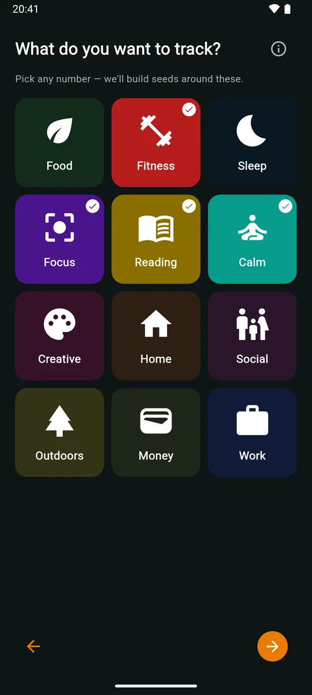

A setup wizard that listens
Pick from twelve interests, say how much time you have on weekdays and weekends, and choose the parts of your day to anchor. zoevo suggests dailies, weeklies and routines you can edit before anything is created. Or start from examples, or from nothing.
